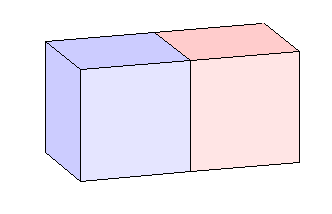

Gravitational force between two cubes
Bengt Fornberg and Nick Hale, October 2010
(Chebfun example quad/TwoCubes.m)
A problem from the Oxford's Numerical Analysis Problem Solving Squad in 2006 was, what is the gravitational force F between two cubes that are right up against each other? Each cube is a uniform unit mass with unit sides and they are attracted by Newton's law with gravitational constant 1. Here's a sketch:
LW = 'linewidth'; lw = 1.2; R = [1 .8 .8]; r = [1 .9 .9]; B = [.8 .8 1]; b = [.9 .9 1]; h = fill3([0 1 1 0],[0 0 0 0],[0 0 1 1],b); set(h,LW,lw), hold on h = fill3([1 2 2 1],[0 0 0 0],[0 0 1 1],r); set(h,LW,lw) h = fill3([0 0 0 0],[0 1 1 0],[0 0 1 1],B); set(h,LW,lw) h = fill3([1 2 2 1],[0 0 1 1],[1 1 1 1],R); set(h,LW,lw) h = fill3([0 1 1 0],[0 0 1 1],[1 1 1 1],B); set(h,LW,lw) view(342,15), axis equal off axis([-.02 2 -.01 1 -.01 1]) set(gcf,'position',[560 427 332 214])
It's easy to write F as a 6-dimensional integral, but it's a hard integral to evaluate because of the dimensionality and the singularity associated with the faces in contact. However, one can reduce the problem to a succession of three integrals corresponding to going up from 0 to 2 dimensions, then to 4, and finally to 6. Each of these integrals can be evaluated quickly with Chebfun, taking advantage of Chebfun's ability to work with singularities.
A more detailed description of the derivation of this approach can be found here: http://www.maths.ox.ac.uk/chebfun/files/TwoCubesEquations.pdf
To simplify some of the expressions in the work below, we consider the slightly modified problem of cubes with side length 2. At the end we divide by 16, which gives us the solution to the original unit cube problem.
tic
Our starting point is the gravitational force between two point masses. With gravitational constant 1, this is simply
F_Point = @(r) 1./r.^2;
where r is the Euclidean distance between two points s and y.
r = @(s,y) sqrt(s.^2+y.^2);
The next step is to move to two dimensions, and compute the gravitational force between two lines. If these lines are separated by a distance y, we must integrate the function
IL = @(s,y) 2*(2-s).*(y./r(s,y)).*F_Point(r(s,y));
with respect to s, the length along the line. Near s=y=0 there is a square root singularity, which we take care of with Chebfun's "singmap" feature. See "help chebfun/maps" for more details.
F_Line = @(y) sum(chebfun(@(s) IL(s,y),[0 2], 'singmap',[0.5 0])); F_Line = chebfun(@(y) F_Line(y), [0 sqrt(18)], ... 'vectorise', 'exps',[-1.5 0], 'singmap',[0.5 0])
F_Line =
chebfun column (1 smooth piece)
interval length endpoint values exponents mapping
[ 0, 4.2] 35 Inf 0.21 -1.5 0 sing 0.5 1
vertical scale = 0.8
Note that here we actually construct a chebfun of F_Line. Since the integral of IL is quite costly to evaluate but simple enough to be represented with a low-degree chebfun, this turns out to be more efficient. (Note also that sqrt(18) is the maximum separation of two points within the cubes).
We next compute the force between two planes separated by a distance y by considering them as a sequence of lines. Using F_Line, the force between two lines computed above, and integrating over all such lines, we find F_Plane, the force between the two planes.
IP = @(s,y) 2*(2-s).*(y./r(s,y)).*F_Line(r(s,y)); F_Plane = @(y) sum(chebfun(@(s) IP(s,y), [0 2],'singmap', [0.5 0])); % F_Plane = chebfun(@(y) F_Plane(y), [0 4], ... % 'vectorise', 'exps',[-1.5 0], 'singmap',[0.5 0]);
To compute the force between two cubes, we integrate over the planes which form them using the force computed above. Here we get two equations, one representing planes which are separated by at most a distance of two, and the other for planes separated by 2 to 4 units.
ICa = @(y) y*F_Plane(y); ICb = @(y) (4-y)*F_Plane(y);
Now we do the actual computation -- integrating with respect to y. Experiments show we need to weaken the tolerance a little here, though the final effect is minimal since the results are then integrated.
F_CubeA = sum(chebfun(ICa,[0 2],'vectorize','singmap',[0.25 0],'eps',1e-12)); F_CubeB = sum(chebfun(ICb,[2 4],'vectorize'));
Adding these results, and dividing by 16 to return to the original unit cube case, we arrive at the solution:
format long
F = (F_CubeA + F_CubeB)/16
toc
F = 0.925981260557292 Elapsed time is 5.700711 seconds.
For comparison Fornberg has also found the exact solution analytically [1]:
exact = (26*pi/3 - 14 + 2*sqrt(2) - 4*sqrt(3) + 10*sqrt(5) - ... 2*sqrt(6) + 26*log(2) - log(25) + 10*log(1+sqrt(2)) + ... 20*log(1+sqrt(3)) - 35*log(1+sqrt(5)) + 6*log(1+sqrt(6)) - ... 2*log(4+sqrt(6)) - 22*atan(2*sqrt(6)))/3
exact = 0.925981260557296
Here is the difference:
error = abs(F-exact)
error =
3.774758283725532e-15
Reference:
[1] L. N. Trefethen, Ten digit problems, in D. Schleicher and M. Lackmann, eds., Invitation to Mathematics: From Competitions to Research, Springer, 2011.